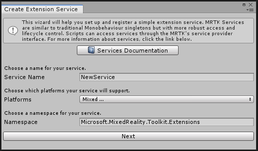
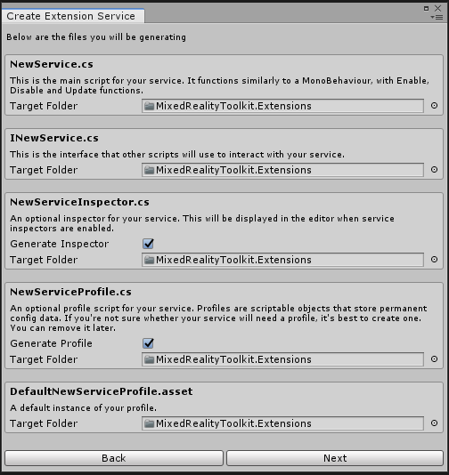
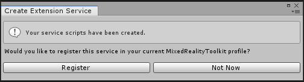
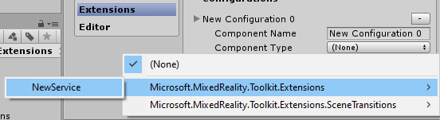

扩展服务 Extension services
扩展服务是扩展混合现实工具包功能的组件。这些服务可由MRTK或其他机构提供。
创建一个扩展服务
创建扩展服务最有效的方法是使用扩展服务创建向导。 要启动扩展服务创建向导，请选择Mixed Reality Toolkit > Utilities > Create Extension Service。

向导自动创建服务组件，并确保正确的接口继承。

Note
在MRTK 2.0.0版本中，扩展服务向导中有一个问题，需要生成 service inspector和服务配置文件。请参阅问题5654获得更多信息。
向导完成后，可以实现服务功能。
注册一个扩展服务
要让应用程序访问，新的扩展服务需要在混合现实工具包中注册。
可以使用扩展服务创建向导来注册服务。

还可以使用 Mixed Reality Toolkit configuration inspector手动注册该服务。

如果扩展服务使用配置文件，请确保在inspector中指定了该配置文件。

组件名称和优先级也可以调整。
访问扩展服务
在代码中，使用MixedRealityServiceRegistry访问扩展服务，如下面示例。
INewService service = null;
if (MixedRealityServiceRegistry.TryGetService<INewService>(out service))
{
// 成功获得服务，执行任何需要的任务。
}